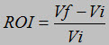
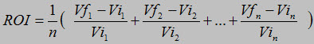
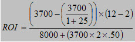

| Guideline: Calculating Return on Investment |
 |
|
| Related Elements |
|---|
OverviewReturn on investment (ROI) is a financial measure that compares the amount of revenue or cost savings derived from an investment with the cost of that investment. ROI is sometimes known as a profitability ratio, because it provides insight into the expected performance of an investment in using the resources of the organization to generate income or other benefits. ROI and other financial ratios can provide management with a valuable tool to measure their progress against predetermined internal goals, a certain competitor, or the overall industry. Simply speaking, when someone asks about ROI, they are really asking: "What do we get back (the return) for the money that we're being asked to spend (our investment)? What is it really worth (ROI)?" FormulaThe formula for calculating ROI for a single time period follows. It requires knowing the initial value of the investment (Vi), the final value of the investment (Vf), and, from those two values, determining the yield (the return) for that single time period. The initial value in the formula might simply be the cost of the investment; whereas, the final value of the investment might be the payback or savings generated by that investment.  Thus, the return on investment equals the benefit (return) of the investment, divided by the cost of that investment. This formula is typically used for short-term investments, such as those lasting less than a year. The formula for calculating ROI for multiple time periods is shown here, too. This formula assumes that there are a number of time periods (n) and that the value of the investment might change over that time period.  ExampleIn this example, we look at the ROI for an IT investment for a three year period, a typical period for IT projects. The costs for hardware, software, and labor are $400K per year, with $50K of license costs added for Years 2 and 3. There is a projected cost savings of $500K during the first year, $600K in Year 2, and $750K in Year 3.
A more realistic exampleIn the real world, the more complex investments become as they grow, the more complex the formula for calculating ROI becomes. If you think about the ROI for implementing a new system, for example, you must take into account changes in productivity. When a new system is put in place, there is an immediate decrease in productivity as the users get used to the new system and new ways of doing their work. With time, productivity will climb back up to original levels and should increase as the new system yields increased productivity and other benefits. Here is a standard formula for calculating first-year ROI. It uses a few key variables, such as system cost (A), monthly labor cost (B), training time in months (C), productivity loss during training (D), and projected productivity gain after training (E).
The numerator represents the value of the system implementation, which comes from an increase in productivity. The left bracket (B – (B / 1 + E)) is the increase in average monthly productivity. The right bracket (12 – C) is the number of months in a year, minus the months spent in training. For example, if the user needs to spend two months in training to become productive on the new system, then there would be 10 months remaining in the year to benefit from the productivity gain. The denominator represents the cost of the system implementation, which includes the cost of the system and the cost of lost productivity (expressed in labor cost) as the users learn how to use the new system. This cost of lost productivity is the product of the monthly labor cost (B) multiplied by months in training (C) multiplied by productivity lost during training (D). Let's substitute the following sample numbers into this equation:
A = cost of hardware and software = $8,000  Using these figures, we would have a first-year ROI of approximately 63%,
which would be very attractive to decision-makers. How to use ROI analysisOrganizations compare the rates of return of different investments to select which investments to pursue to generate maximum return or wealth for the stockholders. Organizations do so by considering the average rate of return, payback period, net present value, profitability index, and internal rate of return for various projects. Keep in mind, however, that ROI analysis, in general, is a rather diverse collection of methods, skills, tools, activities, and ideas that are useful for assessing the relative value over time for an investment. ROI methods are not a single formula nor calculation that will yield a simple yes-no answer to a question of how to invest. The specific method that your organization uses to calculate ROI will depend on the details of your situation and the data that are available. Strengths and weaknessesStrengths: ROI is a popular metric because of its simplicity and versatility. ROI can help organizations in deciding whether they need to pursue an investment, discontinue a program, or identify departments or other assets that yield weak returns, so that they can gain an edge in the industry or over a competitor. Weaknesses: Although ROI tells you what percentage of return you will get over a specified period of time, it does not tell you anything about the magnitude of the investment. Thus, even though a 124% return might seem attractive initially, would you rather have a 124% return on a $10,000 investment or a 60% return on a $300,000 investment? That is why you will often want to know the Net Present Value rather than the ROI. Also, because ROI is so simple, it is easy to manipulate for biased reasons and to express the result in many different ways. |

| Guidelines |
|---|
Licensed Materials - Property of IBM |